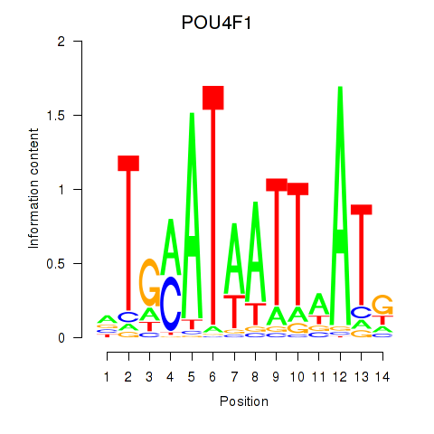
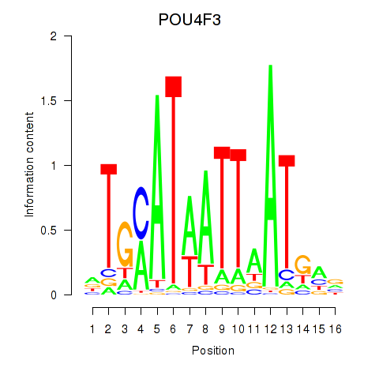

Motif ID: POU4F1_POU4F3
Z-value: 0.691


Transcription factors associated with POU4F1_POU4F3:
| Gene Symbol | Entrez ID | Gene Name |
|---|---|---|
| POU4F1 | ENSG00000152192.6 | POU4F1 |
| POU4F3 | ENSG00000091010.4 | POU4F3 |
![](http://string-db.org/api/image/network?network_flavor=evidence&limit=0&species=9606&caller_identity=MARA&identifiers=9606.ENSP00000365272%0D9606.ENSP00000306894%0D9606.ENSP00000371432%0D9606.ENSP00000290158%0D9606.ENSP00000300737%0D9606.ENSP00000317580%0D9606.ENSP00000252771%0D9606.ENSP00000339726%0D9606.ENSP00000406955%0D9606.ENSP00000303252%0D9606.ENSP00000349588%0D9606.ENSP00000264657%0D9606.ENSP00000323047%0D9606.ENSP00000306637%0D9606.ENSP00000417496%0D9606.ENSP00000356346%0D9606.ENSP00000300006%0D9606.ENSP00000354415%0D9606.ENSP00000370105%0D9606.ENSP00000357591%0D9606.ENSP00000303248%0D9606.ENSP00000366843%0D9606.ENSP00000242317%0D9606.ENSP00000473203%0D9606.ENSP00000424040%0D9606.ENSP00000372654%0D9606.ENSP00000374265%0D9606.ENSP00000353695%0D9606.ENSP00000324775%0D9606.ENSP00000382670%0D9606.ENSP00000368144%0D9606.ENSP00000297404%0D9606.ENSP00000336984%0D9606.ENSP00000314223%0D9606.ENSP00000470767%0D9606.ENSP00000266041%0D9606.ENSP00000269095%0D9606.ENSP00000358203%0D9606.ENSP00000301175%0D9606.ENSP00000328069%0D9606.ENSP00000348337%0D9606.ENSP00000436767%0D9606.ENSP00000300079%0D9606.ENSP00000381253%0D9606.ENSP00000231198%0D9606.ENSP00000386171%0D9606.ENSP00000349577%0D9606.ENSP00000299498%0D9606.ENSP00000419718%0D9606.ENSP00000274026%0D9606.ENSP00000345684%0D9606.ENSP00000379607%0D9606.ENSP00000368190%0D9606.ENSP00000272371%0D9606.ENSP00000359073%0D9606.ENSP00000454268%0D9606.ENSP00000346918%0D9606.ENSP00000354340%0D9606.ENSP00000402915%0D9606.ENSP00000346534%0D9606.ENSP00000347301%0D9606.ENSP00000331766%0D9606.ENSP00000319635%0D9606.ENSP00000354923%0D9606.ENSP00000378508%0D9606.ENSP00000350718%0D9606.ENSP00000368767%0D9606.ENSP00000260010%0D9606.ENSP00000308695%0D9606.ENSP00000302046%0D9606.ENSP00000305263%0D9606.ENSP00000471758%0D9606.ENSP00000325423%0D9606.ENSP00000369855%0D9606.ENSP00000350896%0D9606.ENSP00000308546%0D9606.ENSP00000387593%0D9606.ENSP00000299855%0D9606.ENSP00000351593%0D9606.ENSP00000216044%0D9606.ENSP00000381214%0D9606.ENSP00000318406%0D9606.ENSP00000414034%0D9606.ENSP00000351207%0D9606.ENSP00000381109%0D9606.ENSP00000338413%0D9606.ENSP00000439182%0D9606.ENSP00000344193%0D9606.ENSP00000288602%0D9606.ENSP00000302189%0D9606.ENSP00000257189%0D9606.ENSP00000417038%0D9606.ENSP00000382260%0D9606.ENSP00000353847%0D9606.ENSP00000424424%0D9606.ENSP00000364702%0D9606.ENSP00000274400%0D9606.ENSP00000425845%0D9606.ENSP00000385328%0D9606.ENSP00000380671%0D9606.ENSP00000303549)
{kind=link}
{kind=link}
{kind=link}
{kind=link}
Top targets:
Gene overrepresentation in biological_process category:
| Log-likelihood per target | Total log-likelihood | Term | Description |
|---|---|---|---|
| 0.1 | 0.2 | GO:0007113 | endomitotic cell cycle(GO:0007113) |
| 0.0 | 0.2 | GO:0010730 | negative regulation of hydrogen peroxide biosynthetic process(GO:0010730) positive regulation of skeletal muscle satellite cell proliferation(GO:1902724) positive regulation of growth factor dependent skeletal muscle satellite cell proliferation(GO:1902728) |
| 0.0 | 0.3 | GO:0038161 | prolactin signaling pathway(GO:0038161) |
| 0.0 | 0.1 | GO:0032289 | central nervous system myelin formation(GO:0032289) |
| 0.0 | 0.3 | GO:0010133 | proline catabolic process to glutamate(GO:0010133) |
| 0.0 | 0.2 | GO:2000471 | regulation of hematopoietic stem cell migration(GO:2000471) positive regulation of hematopoietic stem cell migration(GO:2000473) |
| 0.0 | 0.1 | GO:0042264 | peptidyl-aspartic acid hydroxylation(GO:0042264) |
| 0.0 | 0.1 | GO:0061743 | motor learning(GO:0061743) |
| 0.0 | 0.1 | GO:1901804 | beta-glucoside metabolic process(GO:1901804) beta-glucoside catabolic process(GO:1901805) positive regulation of neuronal action potential(GO:1904457) |
| 0.0 | 0.2 | GO:1903976 | negative regulation of glial cell migration(GO:1903976) |
| 0.0 | 0.2 | GO:0048133 | germ-line stem cell division(GO:0042078) male germ-line stem cell asymmetric division(GO:0048133) germline stem cell asymmetric division(GO:0098728) |
| 0.0 | 0.1 | GO:0071314 | cellular response to cocaine(GO:0071314) |
| 0.0 | 0.2 | GO:0051177 | meiotic sister chromatid cohesion(GO:0051177) |
| 0.0 | 0.1 | GO:0036371 | protein localization to T-tubule(GO:0036371) |
| 0.0 | 0.1 | GO:0038018 | Wnt receptor catabolic process(GO:0038018) |
| 0.0 | 0.1 | GO:1902173 | negative regulation of keratinocyte apoptotic process(GO:1902173) |
| 0.0 | 0.1 | GO:0021650 | vestibulocochlear nerve formation(GO:0021650) |
| 0.0 | 0.1 | GO:0031291 | Ran protein signal transduction(GO:0031291) |
| 0.0 | 0.1 | GO:2000255 | negative regulation of male germ cell proliferation(GO:2000255) |
| 0.0 | 0.1 | GO:2000301 | negative regulation of synaptic vesicle exocytosis(GO:2000301) |
| 0.0 | 0.1 | GO:0045590 | negative regulation of regulatory T cell differentiation(GO:0045590) |
| 0.0 | 0.2 | GO:0014809 | regulation of skeletal muscle contraction by regulation of release of sequestered calcium ion(GO:0014809) |
| 0.0 | 0.1 | GO:0038112 | interleukin-8-mediated signaling pathway(GO:0038112) |
| 0.0 | 0.1 | GO:1900165 | negative regulation of interleukin-6 secretion(GO:1900165) |
| 0.0 | 0.1 | GO:0040031 | snRNA modification(GO:0040031) |
| 0.0 | 0.0 | GO:1900369 | negative regulation of RNA interference(GO:1900369) |
| 0.0 | 0.6 | GO:0061014 | positive regulation of mRNA catabolic process(GO:0061014) |
| 0.0 | 0.0 | GO:0046013 | regulation of T cell homeostatic proliferation(GO:0046013) |
| 0.0 | 0.1 | GO:0010727 | negative regulation of hydrogen peroxide metabolic process(GO:0010727) |
| 0.0 | 0.0 | GO:0023016 | signal transduction by trans-phosphorylation(GO:0023016) |
Gene overrepresentation in cellular_component category:
| Log-likelihood per target | Total log-likelihood | Term | Description |
|---|---|---|---|
| 0.0 | 0.1 | GO:0035354 | Toll-like receptor 1-Toll-like receptor 2 protein complex(GO:0035354) |
| 0.0 | 0.1 | GO:0097124 | cyclin A2-CDK2 complex(GO:0097124) |
| 0.0 | 0.5 | GO:0000177 | cytoplasmic exosome (RNase complex)(GO:0000177) |
| 0.0 | 1.0 | GO:0030867 | rough endoplasmic reticulum membrane(GO:0030867) |
| 0.0 | 0.1 | GO:0097451 | glial limiting end-foot(GO:0097451) |
| 0.0 | 0.2 | GO:0032541 | cortical endoplasmic reticulum(GO:0032541) |
| 0.0 | 0.2 | GO:0036157 | outer dynein arm(GO:0036157) |
| 0.0 | 0.5 | GO:0001518 | voltage-gated sodium channel complex(GO:0001518) |
| 0.0 | 0.2 | GO:0000439 | core TFIIH complex(GO:0000439) |
| 0.0 | 0.1 | GO:1990246 | uniplex complex(GO:1990246) |
| 0.0 | 0.2 | GO:0016013 | syntrophin complex(GO:0016013) |
| 0.0 | 0.2 | GO:0060091 | kinocilium(GO:0060091) |
| 0.0 | 0.1 | GO:1990730 | VCP-NSFL1C complex(GO:1990730) |
Gene overrepresentation in molecular_function category:
| Log-likelihood per target | Total log-likelihood | Term | Description |
|---|---|---|---|
| 0.1 | 1.0 | GO:0004839 | ubiquitin activating enzyme activity(GO:0004839) |
| 0.1 | 0.2 | GO:0008193 | tRNA guanylyltransferase activity(GO:0008193) |
| 0.1 | 0.3 | GO:0004657 | proline dehydrogenase activity(GO:0004657) |
| 0.1 | 0.2 | GO:0019781 | NEDD8 activating enzyme activity(GO:0019781) |
| 0.1 | 0.3 | GO:0004925 | prolactin receptor activity(GO:0004925) |
| 0.0 | 0.2 | GO:0004441 | inositol-1,4-bisphosphate 1-phosphatase activity(GO:0004441) inositol-1,3,4-trisphosphate 1-phosphatase activity(GO:0052829) |
| 0.0 | 0.1 | GO:0004597 | peptide-aspartate beta-dioxygenase activity(GO:0004597) |
| 0.0 | 0.1 | GO:0052856 | NADHX epimerase activity(GO:0052856) NADPHX epimerase activity(GO:0052857) |
| 0.0 | 0.2 | GO:0004522 | ribonuclease A activity(GO:0004522) |
| 0.0 | 0.2 | GO:0031730 | CCR5 chemokine receptor binding(GO:0031730) |
| 0.0 | 0.1 | GO:0010309 | acireductone dioxygenase [iron(II)-requiring] activity(GO:0010309) |
| 0.0 | 0.1 | GO:0004348 | glucosylceramidase activity(GO:0004348) |
| 0.0 | 0.1 | GO:0047946 | glutamine N-acyltransferase activity(GO:0047946) |
| 0.0 | 0.1 | GO:0031751 | D4 dopamine receptor binding(GO:0031751) |
| 0.0 | 0.1 | GO:0001875 | lipopolysaccharide receptor activity(GO:0001875) |
| 0.0 | 0.5 | GO:0005248 | voltage-gated sodium channel activity(GO:0005248) voltage-gated ion channel activity involved in regulation of postsynaptic membrane potential(GO:1905030) |
| 0.0 | 0.1 | GO:0004918 | interleukin-8 receptor activity(GO:0004918) |
| 0.0 | 0.2 | GO:0035612 | AP-2 adaptor complex binding(GO:0035612) |
| 0.0 | 0.2 | GO:0004128 | cytochrome-b5 reductase activity, acting on NAD(P)H(GO:0004128) |
| 0.0 | 0.0 | GO:0033858 | N-acetylgalactosamine kinase activity(GO:0033858) |
| 0.0 | 0.1 | GO:0050682 | AF-2 domain binding(GO:0050682) |
| 0.0 | 0.4 | GO:0004602 | glutathione peroxidase activity(GO:0004602) |
| 0.0 | 0.2 | GO:0045504 | dynein heavy chain binding(GO:0045504) |
| 0.0 | 0.1 | GO:0001733 | galactosylceramide sulfotransferase activity(GO:0001733) galactose 3-O-sulfotransferase activity(GO:0050694) |
Gene overrepresentation in C2:CP category:
| Log-likelihood per target | Total log-likelihood | Term | Description |
|---|---|---|---|
| 0.0 | 0.2 | ST_STAT3_PATHWAY | STAT3 Pathway |
Gene overrepresentation in C2:CP:REACTOME category:
| Log-likelihood per target | Total log-likelihood | Term | Description |
|---|---|---|---|
| 0.0 | 0.2 | REACTOME_IL_6_SIGNALING | Genes involved in Interleukin-6 signaling |
|
|
|
|